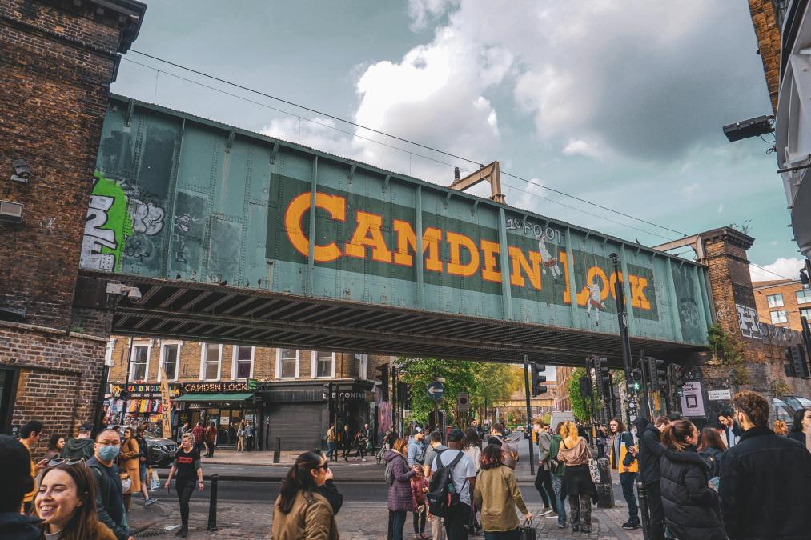
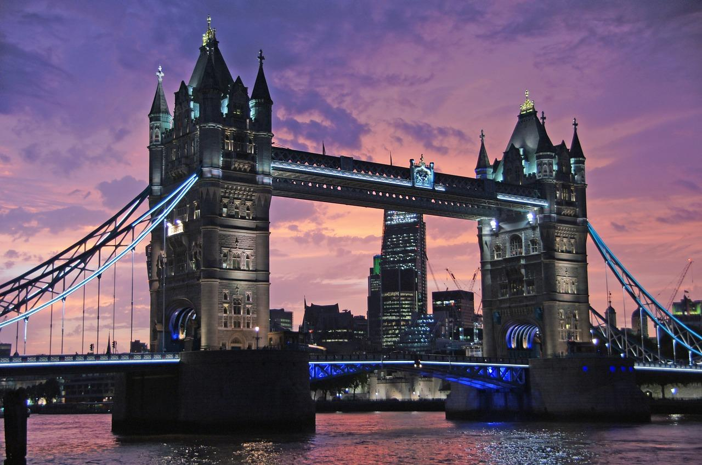
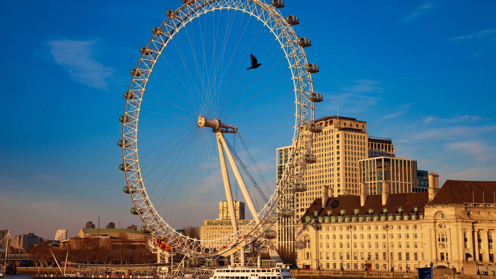
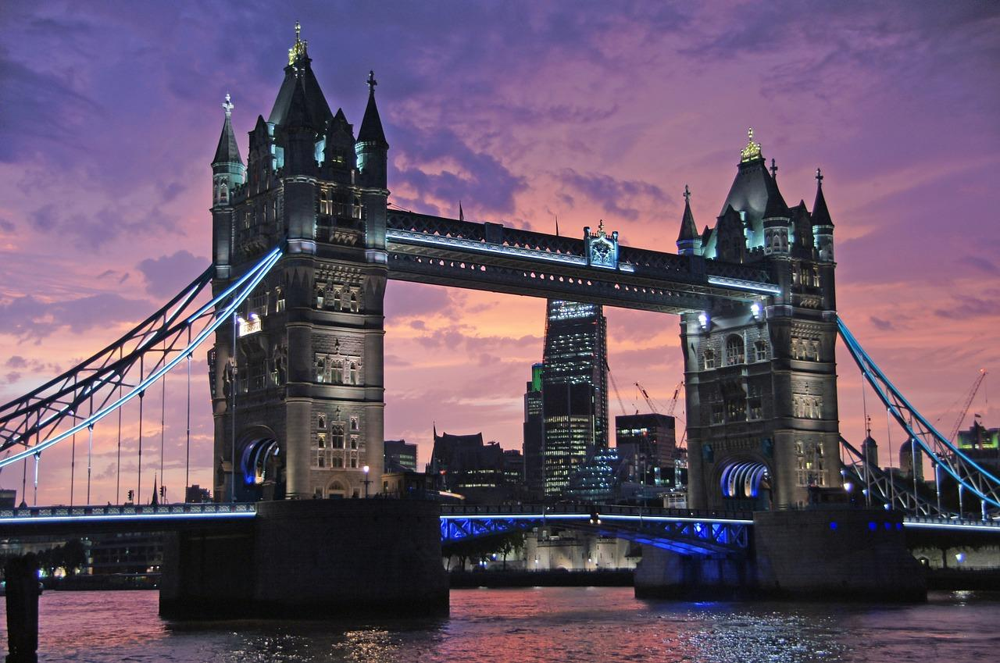
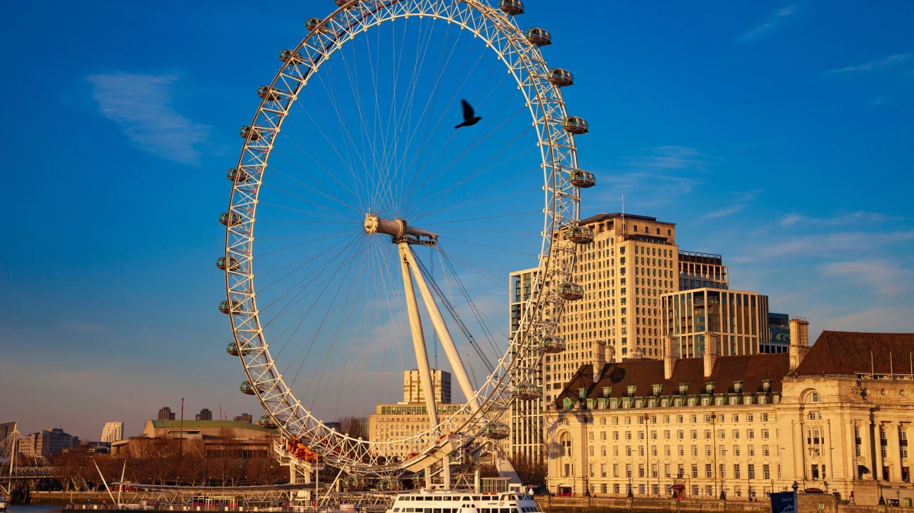
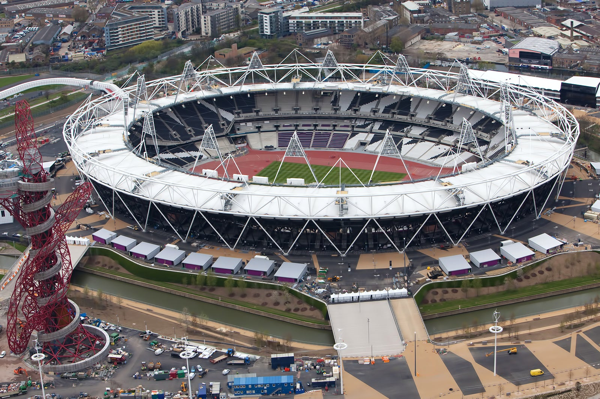
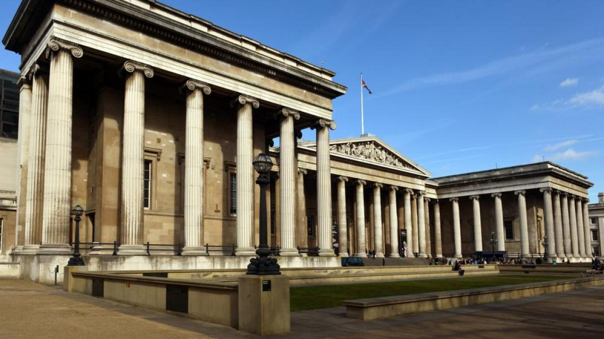
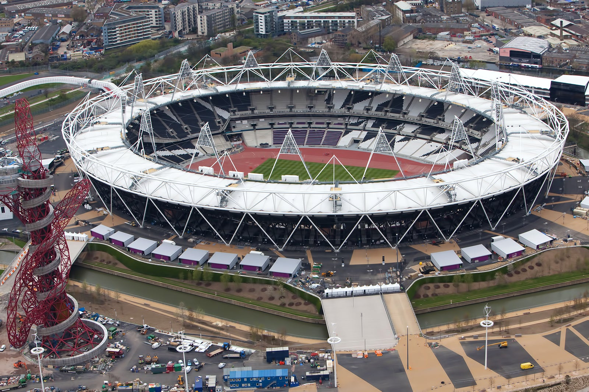
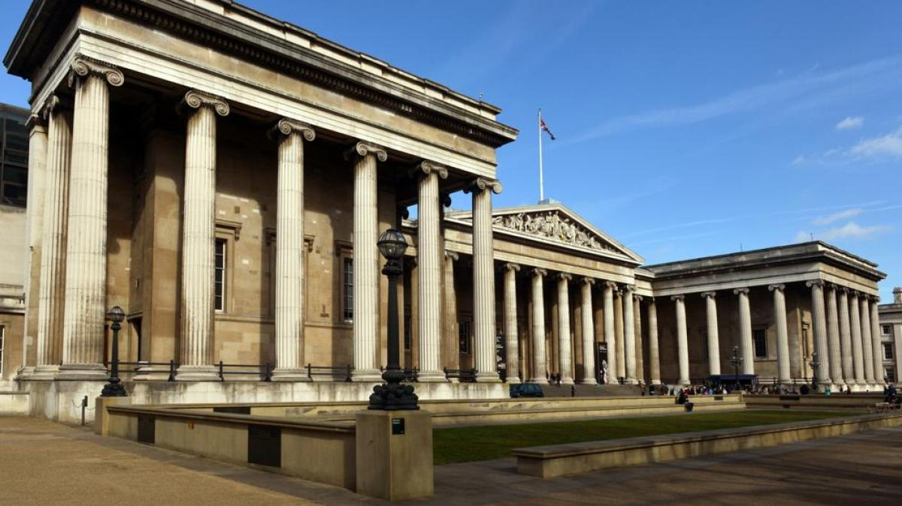

Historia de la ciudad
Londres es la capital y mayor ciudad de Inglaterra y de Reino Unido. Situada a orillas del río Támesis, Londres ha sido un importante asentamiento humano desde que fue fundada por los romanos con el nombre de Londinium hace casi dos milenios. El núcleo antiguo de la urbe, la City de Londres, conserva básicamente su perímetro medieval de una milla cuadrada. Desde el siglo xix el nombre «Londres» también hace referencia a toda la metrópolis desarrollada alrededor de este núcleo. El grueso de esta conurbación forma la región de Londres y el área administrativa del Gran Londres, gobernado por el alcalde y la asamblea de Londres.
Lugares de interés
Camden Town
Camden Town es un conocido barrio en el noroeste de Londres, Inglaterra. Es famoso por su ambiente alternativo, ecléctico y vibrante, así como por su mercado, tiendas, vida nocturna y escena cultural.
Piccadilly Circus
Piccadilly Circus es una famosa plaza y intersección vial ubicada en el corazón de Londres, en el West End. Es conocida por sus grandes pantallas publicitarias y su estatua de Eros, que se encuentra en el centro de la plaza. Aunque a menudo se la denomina "Circus" (círculo), en realidad, Piccadilly Circus es una intersección en lugar de un círculo.

Big Ben
Big Ben es el nombre coloquial que se utiliza comúnmente para referirse a la Gran Campana del Reloj situada en el Palacio de Westminster, en Londres, Inglaterra.Big Ben es conocido por su imponente campana, que pesa más de 13 toneladas y se utiliza para marcar las horas. La torre y el reloj fueron completados en 1859, y desde entonces, han sido emblemáticos de la ciudad de Londres. La campana fue fundida en la fundición Whitechapel Bell Foundry.

Hyde Park
Hyde Park es un famoso parque público en Londres, Inglaterra. Es uno de los parques más grandes de la ciudad y se encuentra en la parte central de Londres, junto a los Jardines de Kensington. El parque cubre una superficie de 350 acres y ofrece un escape sereno del bullicio de la ciudad.

Mapa de la población
Londres es una ciudad muy grande y diversa, con una población que supera los 8 millones de habitantes. La densidad de población varía considerablemente en diferentes áreas de la ciudad. Algunas de las áreas más densamente pobladas suelen ser el centro de Londres y los distritos circundantes, donde se encuentran numerosos lugares de interés, empresas y servicios.
Galeria de imagenes
Explora un mundo de imágenes cautivadoras que narran historias, capturan emociones y revelan la belleza en sus diversas formas. Desde paisajes impresionantes hasta retratos que cuentan mil palabras, cada imagen es una ventana a la creatividad y la expresión artística. Sumérgete en este recorrido visual donde cada fotografía es una obra única, congelando momentos fugaces en el tiempo.
 





 


